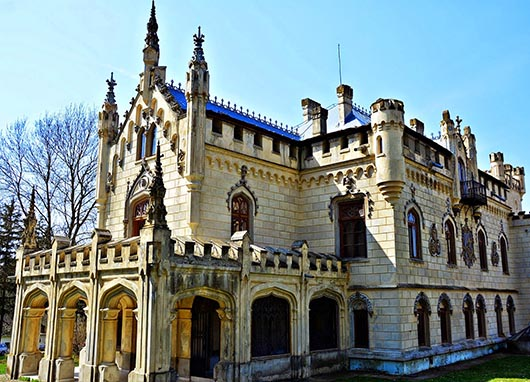

Castelul Sturdza
Castelul Sturdza de la Miclăușeni, cunoscut și sub denumirea de Palatul Sturdza, este un castel în stil neogotic construit între anii 1880-1904 de către Gheorghe Sturza și soția sa Maria, în satul Miclăușeni, la o distanță de 20 km de Roman și 65 km de municipiul Iași. În prezent, se află în proprietatea Mitropoliei Moldovei și Bucovinei și este inclus pe Lista monumentelor istorice din județul Iași din anul 2015.
Moșia Miclăușeni, situată lângă lunca Siretului, este dăruită în jurul anului 1410 de domnitor vornicului Miclăuș. Denumirea acesteia devine cunoscută de abia după moartea vornicului, moșia prelundu-i numele. In 1591 urmașii vornicului vând moșia lui Simion Stroici împreună cu satul adiacent.
Simion Stroici este cel care construiește pe domeniu pentru prima dată un conac la începutul secolului al XVII-lea. Ruinele sale se mai puteau vedea la începutul secolului al XX-lea. În secolul al XVII-lea, Stroici lasă moștenire domeniul și satul familiei Prăjescu, rude ale sale, el neavând moștenitori. Similar la sfârșitul secolului domeniul este lăsat fraților Ioan și Sandu Sturdza, familia Prăjescu înrudindu-se cu ei.
In 1699, frații Sturdza împart averea, domeniul revenindu-i lui Ioan Sturdza, împreună cu satul vecin unde locuiau țăranii clăcași și robii ce lucrau domeniul. De abia în anul 1752, vornicul Ioan Sturdza reclădește conacul boieresc, construindu-l în formă de cruce pe demisol și parte. De asemenea mai adaugă și grajduri pentru cai și alte clădiri anexe. Preocupat de dezvoltarea moșiei, fiul lui Ioan, Dimitrie Sturdza, construiește în perioada 1821-1823 o biserică de curte în apropierea conacului, înzestrând-o cu icoane și obiecte de cult.
Alecu Sturdza Miclăușanu, fiul lui Dimitrie, amenajează o suprafață de 42ha în jurul conacului în stil englezesc cu specii de arbori ornamentali și alei bordate cu flori. Tot el se ocupă și de extinderea colecției de cărți a conacului. Alecu Sturdza, deși rudă a domnitorului Mihail Sturdza, susține ideile revoluționare de la 1848, existând suspiciuni că moartea sa ar fi fost legată de acestea. El, împreună cu alți membrii ai familiei legați de domeniu, sunt înmormântați în biserica conacului. După moartea sa, de administrarea domeniului și a conacului s-a ocupat soția, Ecaterina.
Între 1880-1904, pe amplasamentul vechiului conac se ridică castelul în stil neogotic târziu, după proiectul arhitecților Iulius Reinecke și I. Grigsberg. Sursa de inspirație o constituie Palatul Domnesc din Ruginoasa dar și Palatul Culturii din Iași. La exterior elementele decorative de altorelief preiau, în stil Art Nouveau elemente ale stemei familiei și alte figuri alegorice. La interior se remarcă pereții și tavanele pictate ce conțin inscripții latinești. Domeniul mai conținea o bibliotecă impresionantă și colecții de numismatică, arheologie, epigrafie și artă adunate în timp de membrii familiei Sturdza.
Castelul Miclăușeni este construit în stil neogotic cu elemente de baroc. Clădirea a fost ridicată la sfârșitul sec. al XIX-lea pe locul unui conac boieresc mai vechi din sec. al XVIII-lea, o parte din construcția veche fiind înglobată în actuala clădire, ea aflându-se în aripa estică a castelului. Castelul Sturdza are etaj și mansardă. Pereții exteriori ai clădirii au fost împodobiți cu numeroase decorațiuni în altorelief, printre care și steme inspirate din blazonul familiei Sturdza: un leu cu o sabie și o ramură de măslin sau elemente simbolice, realizate în anul 1898 în stilul Art Nouveau de către arhitectul Iulius Reinecke. Acesta fusese ajutat de către Maria Sturdza, care ilustrase ca pictoriță multe din poeziile lui Vasile Alecsandri, vecin și prieten apropiat al familiei Sturdza. [6] Influențele neogotice se regăsesc în decorațiuni cum ar fi: turnulețe gotice, armuri medievale, sală de manej, dictoane latinești înscrise pe pereți, turn de intrare cu pod peste șanțul de apă.
În interior, castelul avea scări centrale din marmură de Dalmația, mobilier din lemn de trandafir, minuțios sculptat, sobe din teracotă, porțelan sau faianță, aduse de peste hotare, parchet cu intarsii din esențe de paltin, mahon, stejar și abanos, confecționat de meșteri austrieci și având motive geometrice și florale. Plafoanele și pereții interiori au fost pictați în ulei, pe ele aflându-se înscrise numeroase dictoane în limba latină. Părțile componente din lemn ale clădirii (uși, ferestre, lambriuri, scări interioare) sunt realizate din lemn de stejar, tei și rășinoase, fiind bogat sculptate, profilate, traforate și lustruite cu șelac la nivel de mobilier stil.